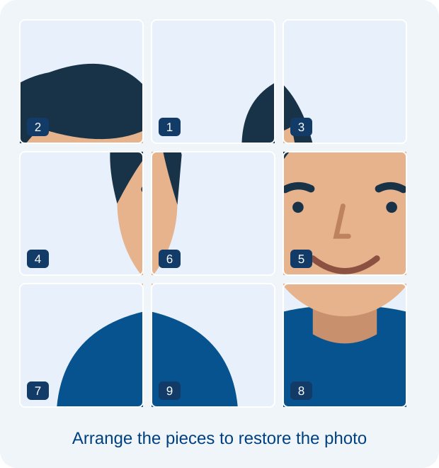
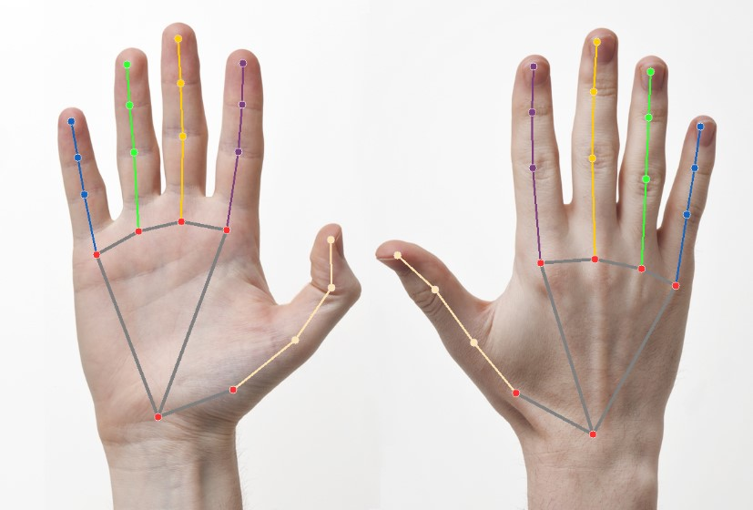
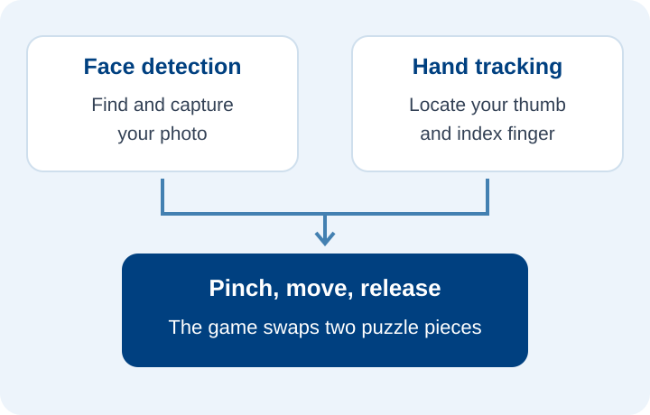

How the Game Works?
The game captures your face after you open the camera and hold still. It turns the photo into a shuffled 3 × 3 puzzle. Your task is to arrange the nine pieces to recreate the original image.
Point at a piece with your index finger, pinch your thumb and index finger together to grab it, then move to another piece and release to swap them. The game keeps track of your moves and time, and finishes when all nine pieces are in the correct positions.
How to Play
- Click Play Game, then Open camera. Allow access and hold still while your photo is captured.
- Raise one hand with your fingers open. Use your index finger to point at a tile.
- Pinch your thumb and index finger together, move to another tile, then release to swap the two pieces.
- Keep swapping until all nine pieces form the original photo. The game records your moves and time.
Tips
- Use good lighting and keep your face and hand inside the camera view.
- Open your fingers before the first pinch. Move steadily so the camera can follow your hand.
- You can also use a mouse, touch, or keyboard. Try the numbered demo if you do not want to use the camera.
How Does Hand Tracking Work
Hand tracking uses a technology called Computer Vision, which allows computers to find patterns in images. With tools like MediaPipe, the computer identifies important points on your hand, such as your fingertips. These points help the game follow your hand's position and movements in real time.
In this game, the program follows your index finger to move the cursor and measures the distance between your thumb and index finger. Bringing them together selects a piece; opening them over another piece swaps the two.


The Role of Machine Learning and Computer Vision
Computer Vision helps the game locate your face and track your hand in the camera feed. This is how the game knows where to capture your photo and where your fingertips are as you play.
Machine Learning provides the pretrained models that recognise faces and hand landmarks. The game then uses those landmark positions to detect pinching and move the cursor. The puzzle rules decide which pieces to swap and when the image is complete.
Features of the Game
- Captures your face and creates a personalised nine-piece photo puzzle.
- Tracks hand movements in real time for pinch-to-swap controls.
- Supports mouse, touch, keyboard, and a camera-free numbered demo.
- Tracks moves and time, with options to view the original image and shuffle again.